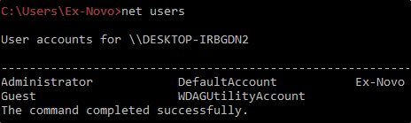
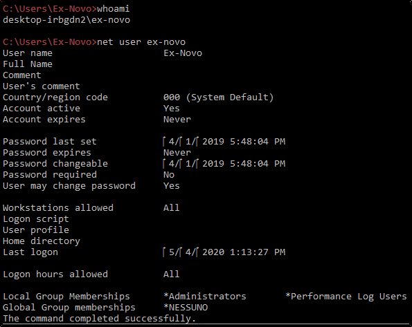

To start, we can look for all the users on the machine: net users 
We can check for our privileges: net user YOUR_USERNAME (we are interested in groups like Administrators) 
A good practice is to check the services with: netstat -ano
(check if the external services are the same of internal services)
As an example, port 445 is only internal here
We can check for password in registry
(Check for something different for password) reg query HKLM /f password /t REG_SZ /s
reg query HKCU /f password /t REG_SZ /s
We can query for the whole register: (Windows Autologin)